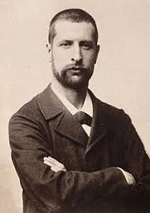
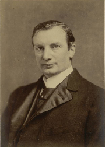
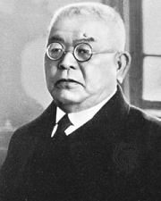
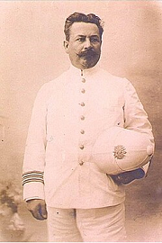
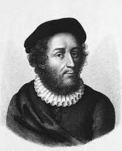
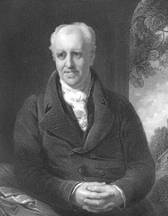

- Главная
- История
- Описание болезни
- Переносчики
- Целители
- защита
- Методы лечения
- Чумной форт
- Шарль де Лорм
- Врачи
- МЕНЮ
Ключевые фигуры в истории борьбы с чумой:
Александр Йерсен (Alexandre Yersin): Швейцарско-французский бактериолог, который в 1894 году во время гонконгской эпидемии обнаружил возбудитель чумы — Yersinia pestis.

Владимир Хавкин (Waldemar Haffkine): Российский и французский бактериолог, создатель первой вакцины против чумы. Он успешно применил ее в Индии и лично ввел вакцину себе.

Китасато Сибасабуро (Kitasato Shibasaburō): Японский врач, работавший над идентификацией возбудителя чумы одновременно с Йерсеном в 1894 году.

Французский ученый Поль-Луи Симон (Paul-Louis Simond) в 1898 году экспериментально доказал, что чума передается от грызунов к человеку через укусы блох. Симон предположил что блохи переносятся с мертвых крыс на людей вызывая бубонную чуму, что подтвердило наблюдения за распространением инфекции.

Ги де Шолиак (Guy de Chauliac): Средневековый французский врач, переживший чуму в Авиньоне, оставил одни из самых подробных описаний болезни.

Афанасий Шафонский: Врач, во время московской чумы (1771) верно определил природу болезни, организовал жесткий карантин и систему госпиталей, что спасло тысячи жизней.

Вверх